LATTE-MV: Learning to Anticipate Table Tennis Hits from Monocular VideosLATTE-MV：从单目视频中学习预测乒乓球击球
Abstract摘要
Physical agility is a necessary skill in competitive table tennis, but by no means sufficient.
身体敏捷性是乒乓球竞技的必要技能，但绝不是充分条件。
Champions excel in this fast-paced and highly dynamic environment by anticipating their opponent’s intent – buying themselves the necessary time to react.
冠军通过预测对手的意图，在这种快节奏、高度动态的环境中表现出色，从而为自己赢得必要的反应时间。
In this work, we take one step towards designing such an anticipatory agent.
本文朝着设计具有预判能力的智能体迈出一步。
Previous works have developed systems capable of real-time table tennis gameplay, though they often do not leverage anticipation.
以前的作品已经开发了能够实时进行乒乓球比赛的系统，尽管它们通常不利用预判。
Among the works that forecast opponent actions, their approaches are limited by dataset size and variety.
在预测对手行为的工作中，他们的方法受到数据集大小和多样性的限制。
Our paper contributes (1) a scalable system for reconstructing monocular video of table tennis matches in 3D and (2) an uncertainty-aware controller that anticipates opponent actions.
我们的论文贡献了 (1) 一个可扩展的系统，用于以 3D 形式重建乒乓球比赛的单目视频；(2) 一个可预测对手行动的不确定性感知控制器。
We demonstrate in simulation that our policy improves the ball return rate against high-speed hits from 49.9% to 59.0% as compared to a baseline non-anticipatory policy.
我们在模拟中证明，与基准非预判策略相比，我们的策略将高速击球的回球率从 49.9% 提高到 59.0%。
Project website : https://sastry-group.github.io/LATTE-MV/
项目网站：https://sastry-group.github.io/LATTE-MV/
1 Introduction1 简介
Table tennis has served as a testbed for robotics research since the 1980s [ 4 ] , presenting unique challenges due to the game’s high speed and dynamic environment.
自 20 世纪 80 年代以来，乒乓球运动一直作为机器人研究的试验台 [4]，由于这项运动的高速和动态环境，带来了独特的挑战。
The sport requires targeted perception, precise motor control, and strategic decision-making, pushing the boundaries of robotic capabilities in sensing, actuation, and real-time processing.
这项运动需要有针对性的感知、精确的运动控制和战略决策，突破机器人在传感、驱动和实时处理方面的能力界限。
Recent advancements in deep learning have propelled the development of robotic systems capable of playing table tennis [ 1 , 10 , 31 , 15 , 18 , 11 ] .
深度学习的最新进展推动了能够打乒乓球的机器人系统的开发[1,10,31,15,18,11]。
These systems have achieved milestones such as cooperative rallying with humans [ 1 ] and competitive play [ 10 ] .
这些系统已实现与人类合作对打 [1] 以及竞技对抗 [10] 等进展。
Despite these achievements, current state-of-the-art systems struggle against professional players in fast-paced rallies.
尽管如此，目前最先进的系统在快节奏回合中仍难以与职业球员抗衡。
One explanation for this shortcoming is that the state-of-the-art systems are unable to anticipate their opponent’s future intent when returning high-speed hits.
一种解释是：面对高速来球时，这些系统无法预判对手接下来的意图。
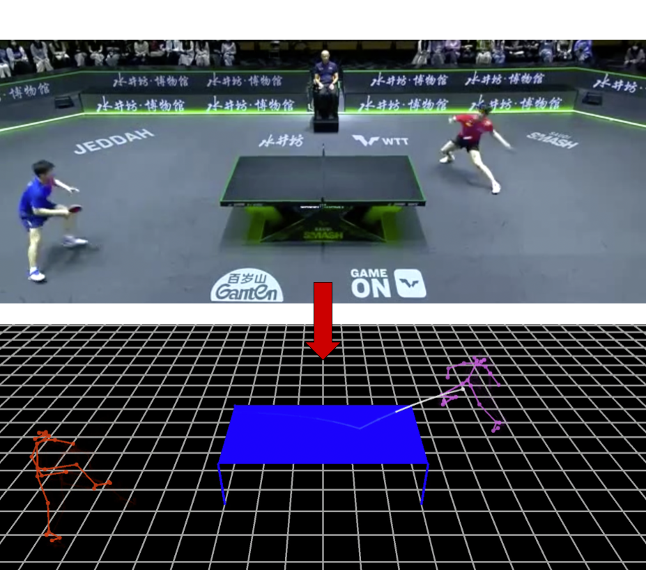
Figure 1 : Example of a reconstructed frame.
图 1：重建帧的示例。
Human-action anticipation has been widely studied in robotics [ 17 , 20 , 40 ] and sports [ 9 , 28 , 42 ] , where it is often regarded as a distinguishing characteristic between amateur and expert athletes [ 9 ] .
人类行为预判在机器人技术[17,20,40]和体育运动[9,28,42]中得到了广泛的研究，它通常被认为是业余运动员和专业运动员之间的区别特征[9]。
Despite these findings, anticipation is yet to play a prominent role in strategic algorithms for table tennis robotics.
尽管有这些发现，预判在乒乓球机器人的战略算法中尚未发挥重要作用。
Previous efforts to forecast opponent serves [ 43 ] and incorporate anticipatory action selection [ 41 , 39 ] have been constrained by small datasets.
先前预测对手发球[43]并纳入预判动作选择[41, 39]的努力受到小数据集的限制。
Access to a large-scale, high-quality dataset of competitive gameplay, a resource currently unavailable, may streamline the development of behavior-aware learning-based algorithms – such as an anticipatory mechanism.
访问大规模、高质量的竞技比赛数据集（目前无法获得的资源）可能会简化基于行为感知学习的算法（例如预判机制）的开发。
To address this gap, we introduce LATTE-MV ( L earning A nticipation for T able T ennis E xecution from M onocular V ideos) that primarily contributes a novel system for reconstructing monocular video of table tennis gameplay in 3D.
为填补这一空白，我们提出 LATTE-MV（Learning Anticipation for Table Tennis Execution from Monocular Videos，从单目视频中学习乒乓球运动预判），主要贡献是一套从乒乓球单目比赛视频恢复三维比赛过程的新系统。
By using monocular videos as input, our system scales to the wealth of publicly available footage of competitive gameplay.
通过使用单目视频作为输入，我们的系统可以扩展到丰富的公开可用的竞技比赛片段。
To the best of our knowledge, this work marks the first attempt at collecting a dataset of table tennis gameplay at scale without specialized recording equipment.
据我们所知，这项工作标志着首次尝试在没有专门记录设备的情况下大规模收集乒乓球比赛数据集。
We process 50 hours of table tennis gameplay into 73,222 exchanges, surpassing the size of the largest collected dataset publicly referenced (14,241 segments in [ 10 ] ).
我们将 50 小时的乒乓球比赛处理为 73,222 次往返击球，超过了公开引用的最大收集数据集的大小（[10] 中的 14,241 段）。
We note that this is not a fair comparison, though, since our reconstruction algorithm does not recover racket poses and our reconstructions are likely less accurate.
不过，我们注意到这不是一个公平的比较，因为我们的重建算法无法恢复球拍位姿，并且我们的重建可能不太准确。
We also note that our data is composed of human-human gameplay featuring professional athletes, as opposed to human-robot gameplay or amateur human-human gameplay.
数据来自职业运动员之间的人人对抗，而非人机对抗或业余选手之间的比赛。
With this dataset in hand, we train a transformer-based generative model [ 35 ] to learn the dynamics of table tennis gameplay.
有了这个数据集，我们训练了一个基于Transformer的生成模型[35]来学习乒乓球比赛的动态。
This model serves as a foundation for anticipatory action prediction, allowing us to forecast an opponent’s future shots based on their prior actions.
该模型是预判动作预测的基础，使我们能够根据对手之前的动作来预测对手未来的击球。
We further reason about epistemic uncertainty in the model’s prediction through conformal bounds which can be used to filter out uncertain predictions.
我们通过共形边界进一步推理模型预测中的认知不确定性，该边界可用于过滤不确定的预测。
We demonstrate in simulation that our model’s predictions can be used to improve the ball return rate of a KUKA robot arm from 49.9% to 59.0% as compared to a baseline non-anticipatory policy.
我们在模拟中证明，与基线非预判策略相比，我们的模型预测可用于将 KUKA 机器人手臂的球回球率从 49.9% 提高到 59.0%。
In conclusion, we make the following contributions: 1) we unify the use of various pre-trained models and develop a novel reconstruction system to extract expert gameplay data from large-scale open-world videos; 2) we apply this dataset to learn an uncertainty-aware anticipatory control algorithm.
总之，我们做出了以下贡献：1）我们统一使用各种预训练模型，开发了一种新颖的重建系统，以从大规模开放世界视频中提取专家比赛数据； 2）我们应用这个数据集来学习不确定性感知的预判控制算法。
We deploy our controller on a simulated robot table tennis player and show that it improves the ball return rate from 49.9% to 59.0% .
我们将我们的控制器部署在模拟机器人乒乓球运动员上，结果表明它将回球率从 49.9% 提高到 59.0%。
2 Related Works相关工作
Reconstruction of Sports Gameplay from Video Reconstructing sports footage is a common area of research within the computer vision community.
从视频重建体育比赛。体育视频重建是计算机视觉领域的常见研究方向。
Some works focus on entity tracking and segmentation on 2D images.
一些工作专注于 2D 图像上的实体跟踪和分割。
[ 36 ] trains a neural network to perform real-time player, ball, and table segmentation and [ 8 ] trains a network for high-speed ball tracking.
[36]训练神经网络来执行实时球员、球和球台分割，[8]训练网络进行高速球跟踪。
General purpose pre-trained object detection and image segmentation models like YOLO [ 26 ] or SAM [ 19 ] can also be used for these tasks.
通用预训练对象检测和图像分割模型（如 YOLO [26] 或 SAM [19]）也可用于这些任务。
A more difficult problem is that of reconstructing 3D information from sports footage.
一个更困难的问题是从体育镜头中重建 3D 信息。
While some works assume access to multiple camera feeds [ 31 , 10 ] or RGB-D camera feed [ 30 ] , many do not make this assumption.
虽然有些作品假设访问多个摄像机源 [31, 10] 或 RGB-D 摄像机源 [30]，但许多作品并没有做出这种假设。
For instance, [ 13 ] uses pre-defined court models for camera calibration, [ 45 ] uses open-source models to reconstruct player joint positions, [ 7 , 29 ] reconstruct 3D ball trajectories by using simplistic projectile models, and [ 46 ] reconstructs 3D ball trajectories from low frame-rate footage.
例如，[13]使用预定义的球场模型进行相机标定，[45]使用开源模型重建球员关节位置，[7,29]使用简单的射弹模型重建3D球轨迹，[46]从低帧率镜头重建3D球轨迹。
Very few works have combined these methods to provide a simultaneous reconstruction of the player and ball from monocular video.
很少有作品将这些方法结合起来，从单目视频中同时重建球员和球。
A series of papers in the mid-2000s approached this problem for soccer gameplay [ 3 , 44 , 22 ] .
2000 年代中期的一系列论文探讨了足球比赛过程中的这个问题 [3, 44, 22]。
To the best of our knowledge, no one has attempted this for table tennis.
据我们所知，还没有人在乒乓球比赛中尝试过这种做法。
Anticipation in Table Tennis Robotics Recent works have designed learning-based systems for various tasks in table tennis robotics [ 1 , 10 , 31 , 15 , 18 , 11 ] , but few have incorporated anticipation into their decision-making algorithm.
乒乓球机器人的预判能力。近期研究为乒乓球机器人的多项任务设计了学习系统 [1,10,31,15,18,11]，但很少将预判纳入决策算法。
[ 41 , 39 ] model the unknown human intent using IDDM (Intention-Driven Dynamics Models), a latent variable model, and [ 41 ] uses this information to improve the table tennis playing ability of a simulated robot.
[41, 39]使用潜变量模型IDDM（意图驱动动力学模型）对未知的人类意图进行建模，并且[41]使用该信息来提高模拟机器人的乒乓球比赛能力。
[ 43 ] trains an LSTM to forecast the landing point of a serve.
[43]训练 LSTM 来预测发球的落点。
These works all use relatively small datasets (less than 1000 table tennis exchanges) of gameplay collected in-house.
这些作品均使用内部收集的相对较小的比赛数据集（少于 1000 次乒乓球往返击球）。
We differ substantially from these works by leveraging a large dataset of expert gameplay.
我们利用大量专家比赛数据集，与这些作品有很大不同。
Uncertainty Estimation Quantifying uncertainty in anticipatory predictions is crucial for deploying a reliable table tennis policy [ 41 ] .
不确定性估计 量化预判预测中的不确定性对于部署可靠的乒乓球策略至关重要[41]。
The primary tools for performing uncertainty estimation with neural networks are ensemble-based methods [ 25 , 12 , 34 ] , which combine outputs from multiple independently trained models to reduce variance and improve robustness, and conformal prediction [ 37 , 2 ] , which provides calibrated confidence intervals around predictions with user-defined error rates.
神经网络的不确定性估计主要采用两类工具：基于集成的方法 [25,12,34]，通过组合多个独立训练模型的输出降低方差、提高鲁棒性；以及共形预测 [37,2]，根据用户指定的错误率构建经过校准的预测置信区间。
We combine both methods in this work.
我们在这项工作中结合了这两种方法。
3 Reconstructing Table Tennis Gameplay比赛过程三维重建
In this section, we present our system for reconstructing 3D gameplay from monocular videos of table tennis matches.
在本节中，我们将介绍我们的系统，用于从乒乓球比赛的单目视频重建 3D 比赛过程。
In particular, we reconstruct the players’ 3D SMPL mesh [ 21 ] and the ball’s 3D trajectory, all relative to the world frame ( Fig. 2 ).
特别是，我们重建了球员的 3D SMPL 网格 [21] 和球的 3D 轨迹，所有这些都相对于世界坐标系（图 2）。
The system comprises three components: video clipping ( Sec. 3.2 ), entity tracking ( Sec. 3.3 ), and global positioning ( Sec. 3.4 ).
该系统包括三个组件：视频剪辑（第 3.2 节）、实体跟踪（第 3.3 节）和全局定位（第 3.4 节）。
3.1 Naming Convention3.1 命名约定
Point A sequence of exchanges.
得分回合（Point）：由多次往返击球组成。
A point starts with a serve and ends when the ball is first out of play.
回合从发球开始，直到球不再处于比赛状态时结束。
Exchange Starts and ends with the same player hitting the ball.
往返击球（Exchange）：以同一名球员的击球为起点和终点。
Exchanges are defined with respect to the player that starts the exchange (we call this player the ego of the exchange).
发起这次往返击球的球员作为参考方（ego）。
One exchange is two segments long.
一次往返击球有两个段长。
In one exchange, we have a pre-hit segment (time before the opponent hits the ball) and a post-hit segment (time after the opponent hits the ball).
在一次往返击球中，我们有一个击球前片段（对手击球之前的时间）和一个击球后片段（对手击球之后的时间）。
Segment Starts when one player hits the ball and ends when the other player hits the ball.
击球片段（Segment）：从一名球员击球开始，到另一名球员击球结束。
Segments partition the point into disjoint time intervals.
这些击球片段将一个得分回合划分为互不重叠的时间区间。
Hitting plane A player’s ”hitting plane” is the -plane along the table’s edge that is closest to the player.
击球平面 球员的“击球平面”是沿球台边缘最靠近球员的平面。
3.2 Video Clipping3.2 视频剪辑
Out of 800 hours of raw table tennis footage collected from online competition recordings, only 50 hours of video exhibit actual gameplay.
从在线比赛录像中收集的 800 小时原始乒乓球镜头中，只有50 小时的视频展示了实际的比赛过程。
The remaining footage consists of the players walking around, preparing to serve, or replays of prior gameplay.
其余的镜头包括球员四处走动、准备发球或重播之前的比赛。
We isolate the gameplay footage with a custom CNN, which is trained to classify frames as occurring during a point or not during a point .
我们训练一个专用 CNN，判断每帧是否处于得分回合之内，从而提取实际比赛片段。
3.3 Entity Tracking3.3 实体追踪
The entity tracking component identifies and tracks the key elements in each frame: the table, the rackets, the two players, and the ball.
实体跟踪组件识别并跟踪每个帧中的关键元素：球台、球拍、两名球员和球。
Table and Rackets A YOLOv8 2D image segmentation model [ 26 ] segments the table surface, table base, and player rackets, providing masks , , and , respectively in the image plane.
球台和球拍 YOLOv8 2D 图像分割模型[26]对球台表面、球台底座和球员球拍进行分割，分别在图像平面中提供掩模、和。
Note that we do not reconstruct racket poses – is only used to facilitate the ball reconstruction.
请注意，我们不会重建球拍位姿 - 仅用于促进球重建。
Table Corners High-quality detection of table corners is essential for camera calibration.
桌角 桌角的高质量检测对于相机标定至关重要。
We first crop the table from each frame using the table mask, .
首先利用球台掩膜 ，从每帧中裁剪出球台区域。
Next, this is fed into a custom UNet model [ 27 ] that outputs probable locations of the four table corners and two horizontal table midpoints (the points where the net intersects the top and bottom edges of the table as shown in Fig. 3 ).
再将裁剪图输入专用 UNet 模型 [27]，预测 4 个球台角点和 2 个横向中点的位置；后者是球网与图像中球台上、下边缘的交点（见图 3）。
Players We use HMR 2.0 [ 16 ] , a human pose estimator and tracker, to obtain 3D SMPL joint positions for each player relative to the camera coordinate system.
球员我们使用 HMR 2.0 [16]（人体姿态估计器和跟踪器）来获取每个球员相对于相机坐标系的 3D SMPL 关节位置。
We determine the handedness of each player using the location of the racket masks and the pixel coordinates of the players’ wrists given by HMR 2.0.
我们使用球拍掩膜的位置和 HMR 2.0 给出的球员手腕的像素坐标来确定每个球员的惯用手。
Ball We adopt the TrackNetV3 architecture [ 8 ] , fine-tuned on a dataset of 10,000 manually labeled frames, for 2D ball tracking.
球 我们采用 TrackNetV3 架构 [8]，在 10,000 个手动标记帧的数据集上进行微调，用于 2D 球跟踪。
3.4 Global Positioning3.4 全局定位
This stage positions the ball and each player’s SMPL mesh in the world frame.
此阶段将球和每个球员的 SMPL 网格放置在世界坐标系中。
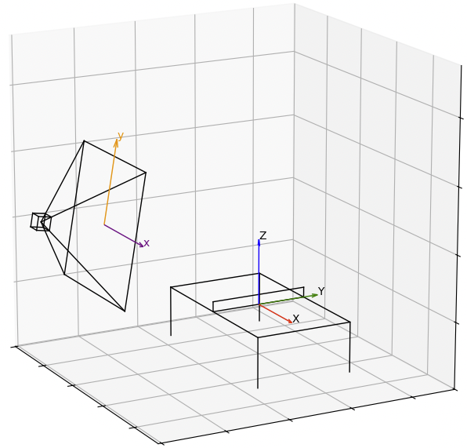
Figure 2 : Visualization of the world frame coordinate system (red-green-blue) and image plane coordinate system (purple-orange).
图2：世界坐标系（红-绿-蓝）和图像平面坐标系（紫-橙）的可视化。
3.4.1 Assumptions3.4.1 假设
We assume the following about the camera’s pose:
我们对相机位姿作如下假设：
- 1.
The camera is translated along the and axes only.
相机仅沿和轴平移。
- 2.
The camera’s rotation is about the -axis only (see Figure 2 ) and that the magnitude of this rotation is small enough so that the table’s legs are approximately parallel when projected on the image plane.
相机的旋转仅围绕轴（见图2），并且该旋转的幅度足够小，使得投影到图像平面上时球台的腿近似平行。
We also assume that the table top’s width (along the -axis) and the table base’s width are the same.
我们还假设桌面的宽度（沿轴）和桌面底座的宽度相同。
These assumptions hold for typical table tennis videos.
这些假设适用于典型的乒乓球视频。
We filter out videos that do not align with these assumptions during our data collection process.
我们在数据收集过程中过滤掉与这些假设不相符的视频。
3.4.2 Camera Calibration3.4.2 相机标定
We perform camera calibration using the six detected key points on the table surface and the projections of table corners onto the ground plane.
利用检测到的 6 个球台表面关键点，以及球台角点在地面上的投影进行相机标定。
Specifically, let denote the six key points returned by the corner detection module at frame (see Fig. 3 ).
具体地，用表示角点检测模块在帧返回的6个关键点（见图3）。
We define the image height of the table’s base as where are points in the image plane.
我们将球台底座的图像高度定义为，其中是图像平面上的点。
The image plane coordinate system we use is visualized in Fig. 2 .
我们使用的图像平面坐标系如图 2 所示。
Our assumptions about the camera’s pose and the table base’s width allow us to project the two table corners closest to the camera, and , onto the ground plane by drawing vertical lines downward in the image plane from the detected points until they intersect the horizontal line (see Fig. 3 ).
我们对相机位姿和球台底座宽度的假设允许我们通过从检测到的点在图像平面中向下绘制垂直线直到它们与水平线相交，将最靠近相机的两个球台角和投影到地平面上（见图3）。
Denote these points by and .
用和表示这些点。
To project the two corners furthest from the camera ( and ) onto the ground plane, we utilize the vanishing point associated with the lines parallel to the table’s depth.
为了将距离相机最远的两个角（和）投影到地平面上，我们利用与平行于球台深度的线相关的消失点。
Using this, we draw vertical lines downward from and until they intersect the lines extending from and to (see Fig. 3 ).
利用此，我们从和向下绘制垂直线，直到它们与从和延伸到的线相交（见图3）。
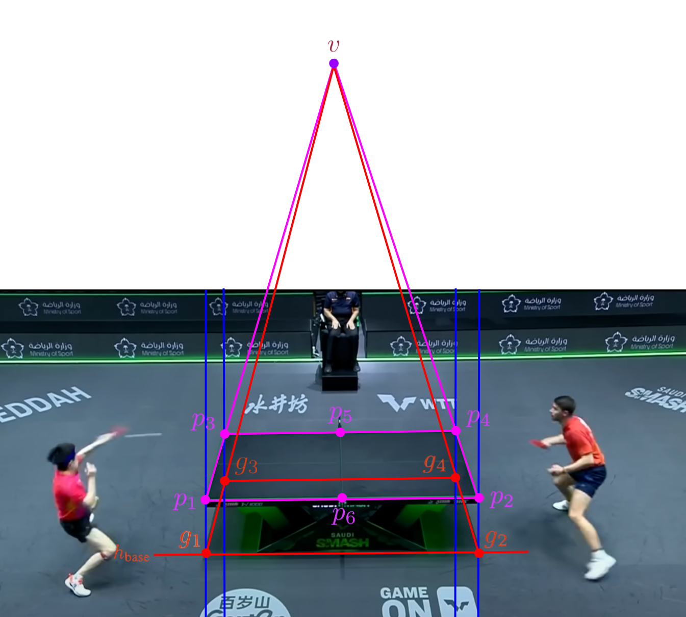
Figure 3 : Points used for camera calibration.
图 3：用于相机标定的点。
Ground projection points (in red) are obtained from the table surface points (in pink) by using vanishing points and the table base height.
地面投影点（红色）是通过使用消失点和球台底座高度从球台表面点（粉色）获得的。
After this procedure, we obtain a total of 10 image points for calibration.
经过上述步骤，总共得到 10 个用于标定的图像点。
The table dimensions in the competition videos are fixed by ITTF standards [ 14 ] , so we may use these 10 points to estimate the camera intrinsic matrix and extrinsic parameters using standard calibration techniques assuming no camera distortion [ 5 ] .
比赛视频中的球台尺寸遵循国际乒联（ITTF）标准 [14]。因此，在假设相机不存在畸变的条件下，可用这 10 个点通过标准标定方法 [5] 估计相机内参矩阵 和外参 。
3.4.3 Player Positioning3.4.3 球员定位
The 3D SMPL joint positions of the players generated by the entity tracking stage are initially defined in the camera coordinate system.
目标跟踪阶段生成的球员 SMPL 三维关节位置最初位于相机坐标系中。
Our positioning procedure draws inspiration from [ 45 ] .
我们的定位方法借鉴了文献 [45]。
Instead of using the camera translation , we compute the 2D position of the player’s root projected onto the ground (center of the two ankle keypoints), and then transform this location into world frame coordinates using inverse camera projection.
我们不直接使用相机平移量 ，而是先计算球员根节点在地面上的二维投影位置（取两个踝关节关键点的中心），再通过相机逆投影将其转换到世界坐标系。
To determine the player’s orientation we directly use the calibrated camera rotation matrix .
球员的朝向则直接用标定得到的相机旋转矩阵 确定。
3.4.4 Ball Trajectory Reconstruction3.4.4 球的轨迹重建
Reconstructing the ball’s 3D trajectory from the 2D keypoints involves several steps.
从二维关键点重建球的三维轨迹需要以下几个步骤。
This procedure is outlined in Algorithm 1 .
算法 1 概述了该过程。
Algorithm 1 Ball Trajectory Reconstruction
算法 1：球的轨迹重建
Hit Point Identification A hit point is a timestep at which either player’s racket makes contact with the ball.
击球时刻识别：击球时刻是指任一球员的球拍与球接触的时间步 。
We identify hit points by detecting local minima in the distance over time between the 2D ball positions and the centroid of the racket masks for each player.
针对每位球员，我们计算球的二维位置 与球拍掩膜质心 之间随时间变化的距离，并将距离的局部极小值作为击球候选。
Bounce Point Identification A bounce point is a timestep at which the ball bounces on the table.
触台时刻识别：触台时刻是指球在球台上反弹的时间步 。
Between pairs of hit points, we identify potential bounce points by detecting local minima in the vertical motion of the ball in the image plane.
在相邻两个击球时刻之间，我们检测球在图像平面中竖直运动的局部极小值，以确定可能的触台时刻。
Let and denote a pair of hit points, and let denote candidate bounce points between them.
设 和 为两个击球时刻， 表示其间的 个候选触台时刻。
For each candidate , we fit parabolas to the vertical positions of the ball between frames and , and between frames and .
对每个候选 ，分别在帧 至 、帧 至 的区间内，用抛物线拟合球的竖直位置。
We compute the mean squared error (MSE) of these fits and select the that minimizes the total MSE:
我们计算两段拟合的均方误差（MSE），并选择使总 MSE 最小的 ：
| (1) |
where and are the fitted quadratic functions for the respective intervals.
其中， 和 分别是对应区间内拟合得到的二次函数。
For serves hits, we search over pairs of potential bounce points by fitting 3 parabolic segments instead of 2.
对于发球击球，我们通过拟合 3 个抛物线段（而不是 2 个）来搜索潜在弹跳点对。
Trajectory Fitting Since the racket’s 3D pose is unknown, at hit points, we approximate the ball’s 3D position as the center of the player’s racket hand (for which the 3D position is known).
轨迹拟合。由于球拍三维位姿未知，我们用球员持拍手的中心近似击球时的球位置；该手部中心的三维位置已知。
At bounce points, we use the fact that the ball’s global height is the same as that of the table and use inverse camera projection to determine its 3D position.
在弹跳点，我们利用球的全局高度与球台的高度相同的事实，并使用逆相机投影来确定其 3D 位置。
Between each pair of hit and bounce points, we model the ball’s 3D trajectory with a simplistic projectile model similar to [ 29 , 7 ] .
在每对击球点和弹跳点之间，我们使用类似于 [29, 7] 的简单射弹模型对球的 3D 轨迹进行建模。
In particular, we model the ball as undergoing projectile motion with Stokes drag [ 32 ] .
特别是，我们将球建模为具有斯托克斯阻力的抛射运动[32]。
Given fixed initial and final positions and at times and (between hit and bounce points), the analytic solution for the ball’s trajectory is given by:
给定时刻 和 的固定起终点 和 （即击球与触台之间的两个端点），轨迹的解析解如下：
| (2) | ||||
| (3) | ||||
| (4) |
where is the acceleration due to gravity and is the air resistance coefficient.
其中为重力加速度，为空气阻力系数。
We optimize by minimizing the reprojection error:
我们通过最小化重投影误差来优化：
| (5) |
3.5 Reconstruction Results3.5 重建结果
We applied our reconstruction procedure to 800 hours of raw table tennis footage.
我们将重建程序应用于800 小时的原始乒乓球镜头。
The video clipping stage distills the raw footage down to 50 hours of gameplay.
视频剪辑阶段将原始素材提炼为 50 小时的比赛时间。
To ensure robustness of our reconstructions, we discard any points which contain a frame for which the entity tracking stage fails to identify the players, ball, or table.
为保证重建可靠性，只要某一帧的实体跟踪无法识别球员、球或球台，就剔除包含该帧的整个得分回合。
We also discard points for which the MSE in Eq. 1 is above some calibrated threshold.
式（1）的均方误差超过校准阈值的回合也会被剔除。
This eliminates almost half of the game-play footage we process.
这消除了我们处理的几乎一半的比赛镜头。
From this, we recovered 73,222 exchanges corresponding to 26.72 hours of pure table tennis gameplay.
由此，我们恢复了 73,222 次往返击球，对应于 26.72 小时的纯乒乓球比赛时间。
An example of a reconstructed frame is shown in Fig. 1 .
图1示出了重建帧的示例。
3.5.1 Reconstruction Quality3.5.1 重建质量
To assess the accuracy of our reconstruction, we computed the reprojection errors across all frames in our dataset.
为了评估重建的准确性，我们计算了数据集中所有帧的重投影误差。
Note that our videos have pixel resolution.
请注意，我们的视频具有像素分辨率。
Fig. 5 plots the reprojection errors for both the recovered ball trajectory and human pose trajectory signals.
图 5 绘制了恢复的球轨迹和人体姿态轨迹信号的重投影误差。
On average, 1.41 cm around the table’s center corresponds to 1 px in the image plane.
平均而言，球台中心周围 1.41 厘米对应于图像平面中的 1 像素。
This implies that our estimate for the ball position and player SMPL joint positions is off on average by cm and cm, respectively.
这意味着我们对球位置和球员 SMPL 关节位置的估计平均分别偏离厘米和厘米。
3.5.2 Dataset Variety and Bias3.5.2 数据集多样性和偏差
The average ball speed in our dataset is m/s, with of speed’s falling within the interval m/s.
我们数据集中的平均球速为米/秒，其中速度落在米/秒区间内。
The average time between hits is seconds.
相邻击球的平均时间间隔为 秒。
Missing gameplay For each point, our system may not include the last segment if the losing player does not make contact with the ball.
缺失的比赛片段。如果失分球员未能触球，系统可能无法重建该得分回合的最后一个击球片段。
This is because the ball reconstruction algorithm requires the ball to be hit by a racket following a bounce point.
这是因为球重建算法要求球在弹跳点之后被球拍击打。
This segment is arguably the most important portion of a point, as it exhibits the winning move.
这一片段可能是整个得分回合中最重要的部分，因为它体现了制胜一击。
Failing to reconstruct this critical segment introduces a significant bias in our dataset distribution.
未能重建这个关键部分会在我们的数据集分布中引入显着的偏差。
Population-level Bias We observe what may be a common trend in table tennis gameplay [ 38 ] : players tend to hit the ball towards their right.
群体层面的偏差 我们观察到乒乓球比赛中可能存在的普遍趋势 [38]：球员倾向于将球击向右侧。
In particular, the distribution of -positions of the ball trajectory when intersected with the hitting plane appears to be bi-modal (see Fig. 5 ).
特别地，当与击球平面相交时，球轨迹的-位置的分布呈现出双峰分布（参见图5）。
This means that players tend to hit away from the center of the table.
这些球路往往落在远离球台中心的位置。
This population-level bias is captured in our dataset distribution, and it may influence the performance of our learned models.
这种群体水平的偏差在我们的数据集分布中得到体现，它可能会影响我们学习模型的性能。
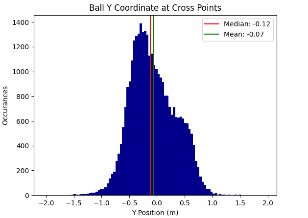
Figure 4 : Ball coordinate at hitting plane
图4：球在击球平面的坐标
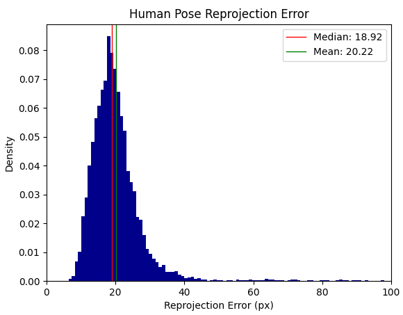
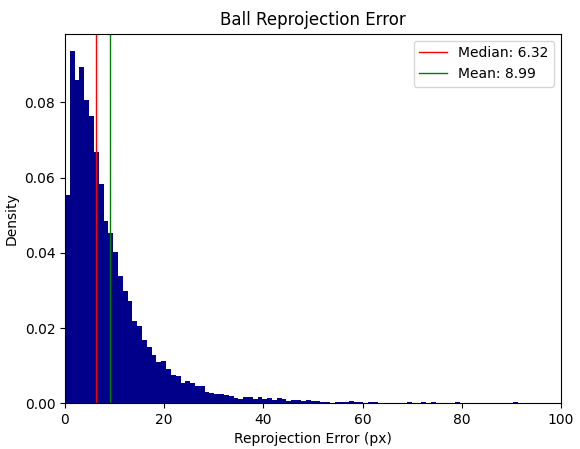
Figure 5 : Histograms of ball and player joint position reprojection errors.
图 5：球和球员关节位置重投影错误的直方图。
4 Anticipatory Prediction预判
The ability to anticipate an opponent’s intent distinguishes amateur players from professional competitors.
预测对手意图的能力是业余选手与职业选手的区别。
This anticipation skill may enable robot systems to play fast-paced, competitive table tennis games, despite fundamental hardware constraints.
尽管存在基本的硬件限制，这种预测技能可以使机器人系统能够打快节奏的、有竞争力的乒乓球比赛。
In this section, we introduce an approach to predict an opponent’s intent before they hit the ball.
在本节中，我们将介绍一种在对手击球之前预测其意图的方法。
We achieve this by training a generative model—a transformer-based neural network [ 35 ] —on our extensive dataset of reconstructed table tennis matches.
我们通过在重建乒乓球比赛的广泛数据集上训练生成模型（基于Transformer的神经网络[35]）来实现这一目标。
Recent works have shown that transformers can learn complex dynamics and reasoning from large datasets [ 23 , 16 ] .
最近的工作表明 Transformer 可以从大型数据集中学习复杂的动态和推理 [23, 16]。
We aim for our model to similarly capture the game dynamics and player behaviors in table tennis.
我们的目标是让我们的模型能够类似地捕捉乒乓球比赛的动态和球员行为。
By sampling from this model, we generate predictions of ball trajectories based on observed gameplay.
通过从该模型中采样，我们根据观察到的比赛过程生成球轨迹的预测。
We apply conformal prediction to pair these predictions with a measure of uncertainty.
我们应用共形预测将这些预测与不确定性度量配对。
4.1 Transformer-based Prediction Model4.1 基于Transformer的预测模型
Let denote the dataset of reconstructed points.
令 表示重建得分回合构成的数据集。
Each reconstructed point consists of a sequence of reconstructed frames , which include the opponent’s 3D SMPL joint positions, the ego’s root position, and the ball’s position (all in the world frame).
每个重建回合 由重建帧序列 组成，其中包含对手的三维 SMPL 关节位置、参考方的根节点位置和球的位置，均位于世界坐标系中。
We tokenize each point into , where each token is formed by concatenating the opponent’s SMPL joint positions, the ego’s root position only, and the ball’s position.
将每个回合编码为词元序列 ；其中每个词元 由对手的 SMPL 关节位置、参考方的根节点位置以及球的位置拼接而成。
Our goal is to model the joint probability density function auto-regressively:
我们的目标是对联合概率密度函数进行自回归建模：
| (6) |
Following the approach in [ 24 ] , we assume a Gaussian distribution with constant variance and train a transformer to minimize the negative log-likelihood loss , which takes the form
按照[24]中的方法，我们假设具有恒定方差的高斯分布，并训练Transformer以最小化负对数似然损失，其形式为
| (7) |
where are the predicted tokens from the transformer.
其中是Transformer预测的标记。
4.1.1 Model Architecture4.1.1 模型架构
We model the joint probability density using a vanilla decoder-only transformer [ 35 ] to capture temporal dependencies in the data.
我们采用标准的仅解码器 Transformer [35] 来建模联合概率密度 ，以捕捉数据中的时间依赖关系。
We set the embedding dimension and use transformer layers.
我们设置嵌入尺寸并使用Transformer层。
Each attention layer employs 16 heads, and the MLP has a hidden dimension of 1024.
每个注意力层采用 16 个头，MLP 的隐藏维度为 1024。
The final model contains approximately 3.2 million learnable parameters, allowing for an average inference time under 10 milliseconds on an Nvidia GeForce RTX 3090 GPU.
最终模型包含大约 320 万个可学习参数，在 Nvidia GeForce RTX 3090 GPU 上的平均推理时间低于 10 毫秒。
We train the model for 200 epochs to minimize the loss function in Eq. 7 .
以式（7）的损失为目标训练 200 轮。
4.2 Conformal Prediction4.2 共形预测
We sample from our generative model to obtain predictions of future ball trajectories.
我们从生成模型中进行采样以获得未来球轨迹的预测。
To pair these predictions with a measure of uncertainty, we use conformal prediction [ 37 ] , a statistical framework that allows us to construct prediction intervals with formal guarantees on their coverage probability.
为了将这些预测与不确定性度量配对，我们使用共形预测[37]，这是一种统计框架，允许我们构建预测区间，并对其覆盖概率进行正式保证。
4.2.1 Conformal Prediction Theory4.2.1 共形预测理论
We first provide a brief review of the key result we will use.
我们首先简要回顾我们将使用的关键结果。
Suppose we have two datasets, and , both consisting of i.i.d. samples drawn from some unknown distribution on .
假设有两个数据集 和 ，均由从 上某个未知分布独立同分布采样得到的样本 构成。
Let be an estimator for conditioned on and let be an estimator of the spread of our predictions.
令 表示给定 时对 的估计量，并令 估计预测结果的离散程度。
Suppose that both and are independent of the data in .
假设和都与中的数据无关。
For each , we compute the residual
对于每个，我们计算残差
| (8) |
Letting and given an error tolerance , we compute the conformal quantile:
令并给定误差容限，我们计算共形分位数：
| (9) |
where is the Dirac measure centered at .
其中是以为中心的狄拉克测度。
Then setting
然后设置
| (10) |
we have the theoretical guarantee .
我们有理论保证。
4.2.2 Implementing Conformal Prediction4.2.2 实施共形预测
To implement conformal prediction, we partition our dataset into a training set and a calibration set .
为了实现共形预测，我们将数据集分为训练集和校准集。
We further divide into disjoint subsets and train an ensemble of transformers, , independently on these subsets.
进一步将 划分为 个不相交子集，分别独立训练模型，得到由 个 Transformer 构成的集成 。
For each define ( e.g . the ball’s -coordinate in the th token outputted by the transformer).
对于每个定义（例如Transformer输出的第标记中球的坐标）。
For every hit in the th reconstruction , we set and , where is the timestep some fixed amount before the opponent hits the ball ( ), is a timestep some fixed amount after the opponent hits the ball, and is the ball’s ground-truth -coordinate in frame .
对于第 个重建回合 中的每次击球，设置 和 。其中， 是对手击球前固定时长处的时间步（）， 是击球后固定时长处的时间步，而 是第 帧中球的真值 坐标。
Using our ensemble of transformers, we feed as context and generate predictions for the ball’s -coordinate at frame number .
使用我们的 Transformer 集合，我们将作为上下文，并为球在帧编号处的坐标生成预测。
We then define the aggregated prediction and standard deviation as:
然后，我们将聚合预测和标准差定义为：
| (11) |
| (12) |
Using these, we compute the residuals from Eq. 8 on and construct the conformal confidence intervals from Eq. 10 .
据此，在 上按式（8）计算残差，再按式（10）构建共形置信区间 。
We repeat this process for the ball’s -coordinate and -coordinate, constructing two more confidence intervals and .
我们对球的-坐标和-坐标重复此过程，构造另外两个置信区间和。
Finally, we form the confidence region .
最后，我们形成置信区域。
Assuming samples are drawn i.i.d, an application of the union bound shows that the ball’s true position at frame number satisfies:
假设样本是独立同分布的，联合上界的应用表明球在帧编号处的真实位置满足：
| (13) |
5 Experiments and Results5 实验与结果
In this section, we evaluate the effectiveness of our model for making anticipatory predictions about an opponent’s actions in table tennis.
在本节中，我们评估我们的模型对对手在乒乓球比赛中的行为进行预判预测的有效性。
We conduct a series of experiments to demonstrate the utility of our dataset in improving robot performance in fast-paced gameplay.
我们进行了一系列实验，以证明我们的数据集在提高快节奏比赛中机器人性能方面的实用性。
5.1 Experimental Setup5.1 实验设置
We partitioned our dataset into five disjoint training subsets , a calibration set of 2,500 exchanges, and a test set of 1,000 exchanges.
我们将数据集划分为五个不相交的训练子集、包含 2,500 次往返击球的校准集和包含 1,000 次往返击球的测试集。
We trained an ensemble of five transformers on the training subsets.
我们在训练子集上训练了五个 Transformer 的集合。
The calibration set was used to compute the conformal quantile for various significance levels .
校准集用于计算不同显着性水平的共形分位数。
We then ran the following experiments on the held-out test set .
然后我们在保留的测试集上运行以下实验。
5.2 Evaluating the Confidence Regions5.2 评估置信区域
We first verify that the conformal prediction intervals satisfy the theoretical coverage guarantees.
我们首先验证共形预测区间是否满足理论覆盖保证。
For each exchange in the test set, we compute the conformal regions for , , and .
对于测试集中的每个往返击球，我们计算、和的共形区域。
To evaluate the coverage, we measured the proportion of times the true ball position fell within the predicted confidence intervals along each axis and within the entire confidence region .
为了评估覆盖范围，我们测量了真实球位置落在沿每个轴的预测置信区间内以及整个置信区域内的次数比例。
Table 1 summarizes these results.
表 1 总结了这些结果。
We see that the empirical coverage closely matches the theoretical guarantees along each axis.
我们看到经验覆盖范围与每个轴上的理论保证紧密匹配。
We also observe that the total coverage exceeds the theoretical lower bound, implying that the union bound is loose in this setting.
我们还观察到总覆盖率超过了理论下限，这意味着在这种情况下联合上界是宽松的。
| 0.90 | 0.885 | 0.906 | 0.905 | 0.70 | 0.763 |
| 0.85 | 0.830 | 0.858 | 0.862 | 0.55 | 0.652 |
| 0.80 | 0.782 | 0.796 | 0.822 | 0.40 | 0.532 |
Table 1 : Empirical coverage probabilities for different significance levels on the test set.
表 1：测试集上不同显着性水平的经验覆盖概率。
The theoretical coverage probabilities are given by and .
理论覆盖概率由和给出。
We also analyzed the average width of the confidence intervals along each axis at different prediction timesteps (see Figure 6 ).
我们还分析了不同预测时间步长下每个轴的置信区间的平均宽度（见图6）。
We observed that as the prediction horizon increases, the confidence intervals become wider, reflecting increased uncertainty in the predictions.
我们观察到，随着预测范围的增加，置信区间变得更宽，反映出预测的不确定性增加。
We also see that the confidence intervals differ in size along each axis.
我们还看到每个轴上的置信区间大小不同。
For instance, the confidence intervals are much larger along the x-axis than along the z-axis.
例如，沿 x 轴的置信区间比沿 z 轴的置信区间大得多。
This is explained by the fact that the ball’s -axis speed is usually larger than its -axis and -axis speeds.
这是因为球的轴速度通常大于其轴和轴速度。
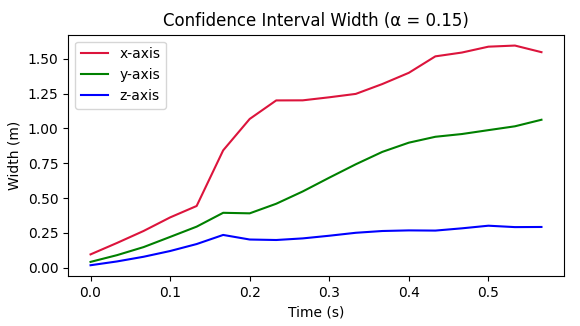
Figure 6 : Average confidence interval width along each axis as a function of the prediction time horizon.
图 6：沿每个轴的平均置信区间宽度作为预测时间范围的函数。
5.2.1 Analysis of Extreme Hits大角度击球分析
We define extreme hits as opponent hits which cross the ego player’s hitting plane with an absolute -value greater than meters (i.e. hits to the far left or far right side of the table).
将对手击出的球穿过参考方击球平面时，绝对 坐标超过 米的情况定义为大角度击球，即球飞向球台的最左侧或最右侧。
For each extreme hit in the test set, we examined whether the confidence intervals were biased toward the correct direction at the moment the ball crosses the robot’s hitting plane.
对于测试集中的每次大角度击球，我们检查了当球穿过机器人击球平面时置信区间是否偏向正确方向。
In particular, we say that a confidence region is biased left if it excludes at least of the right side of the table.
具体而言，如果置信区域排除了球台右侧至少 的范围，就称它偏向左侧。
We define biased right analogously.
我们类似地定义偏右。
The analysis shows that the confidence regions usually over-cover the table on extreme hits.
分析表明，对于大角度击球，置信区域通常覆盖了过宽的球台范围。
However, of the subset of confidence regions that are biased, they are biased towards the correct side more than of the time (see Table 2 ).
不过，在确实具有方向偏向的置信区域中，偏向正确一侧的比例超过 （见表 2）。
| True Right真实方向：向右 | True Left真实方向：向左 | |
|---|---|---|
| Over Covered过度覆盖 | 0.814 | 0.583 |
| Biased Right偏右 | 0.163 | 0.039 |
| Biased Left偏左 | 0.023 | 0.388 |
Table 2 : Proportion of extreme hits where the confidence intervals were biased in the correct direction at the hitting plane ( ).
表 2：在击球平面上置信区间偏向正确方向的大角度击球比例（）。
5.3 Anticipatory Control Algorithm5.3 预判控制算法
To test the utility of the conformal confidence regions, we designed a simple control algorithm that enables the robot to preposition itself before an opponent hits the ball.
为了测试共形置信区域的实用性，我们设计了一种简单的控制算法，使机器人能够在对手击球之前预先定位。
5.3.1 Robot Reachable Set Modeling5.3.1 机器人可达集建模
We model the robot arm’s reachable set as growing linearly over time, starting from the current end-effector position .
我们将机器人手臂的可达集建模为从当前末端执行器位置开始，随时间线性增长。
Specifically, we use the model:
具体来说，我们使用以下模型：
| (14) |
where is a fixed maximum velocity, and is the precomputed safe, reachable set determined by the environment and the robot’s kinematics.
其中是固定的最大速度，是由环境和机器人运动学确定的预先计算的安全、可到达的集合。
5.3.2 Target Confidence Region Selection5.3.2 目标置信区域选择
Let be a sequence of reconstructed frames of a point, ending just before the opponent hits the ball.
令 表示一个得分回合的重建帧序列，序列恰好在对手击球前结束。
As described in Sec. 4.2.2 we generate the conformal confidence region for each .
按照第 4.2.2 节的方法，为每个 生成共形置信区域 。
We then set,
然后我们设置，
| (15) |
5.3.3 Target Pre-Positioning Selection5.3.3 目标预定位选择
We would like to select a point at which the agent pre-positions its end-effector.
我们希望选择一个点 ，供智能体提前将末端执行器移至该处。
A straightforward choice would be the centroid of .
一个简单的选择是的质心。
In practice, we find that applying some shrinkage towards a fixed central position leads to better performance.
在实践中，我们发现对固定的中心位置应用一些收缩会带来更好的性能。
Let be such a fixed position.
令为这样一个固定位置。
We set
我们设定
| (16) |
where is the projection mapping onto and is a hyper-parameter.
其中是到的投影映射，是超参数。
5.4 Anticipatory Controller Performance5.4 预判控制器性能
We evaluated the effectiveness of our anticipatory control algorithm on a robotic platform in simulation and measured its impact on the ability to return shots.
我们在模拟机器人平台上评估了预判控制算法的有效性，并测量了其对回击球能力的影响。
5.4.1 Simulation Setup5.4.1 模拟设置
We used a KUKA robotic arm within the MuJoCo physics simulation environment [ 33 ] .
我们在 MuJoCo 物理模拟环境中使用了 KUKA 机械臂 [33]。
The arm is mounted on a gantry with a top speed of m/s, similar to the setup in [ 10 ] .
该臂安装在最高速度为米/秒的龙门架上，类似于[10]中的设置。
The design parameters, such as arm size and the gantry’s traversable space, also mirror those in [ 10 ] .
机械臂尺寸和龙门架可移动空间等设计参数也与文献 [10] 相同。
A snapshot of the environment is shown in Fig. 8 .
环境快照如图8所示。
Our control objective is to maximize the ball return rate , defined as the proportion of incoming shots the robot successfully returns.
我们的控制目标是最大化回球率，定义为机器人成功返回的来球比例。
To achieve this, we designed a blocking controller where the robot aims to block incoming shots without performing a swing.
机器人以挡球方式回球，不主动挥拍。
The target pose for the racket, achieved by the end-effector, is set to return the ball to the center of the opponent’s side of the table, as illustrated in Fig. 7 .
由末端执行器实现的球拍目标位姿被设置为将球返回到对手一侧球台的中心，如图7所示。
We note that the controller design is independent of the anticipation algorithm described in Sec. 4 .
这一模块独立于第 4 节的预判模块。
We use this setup solely to measure the improvement in performance that anticipation brings in terms of the ball return rate.
我们仅使用此设置来衡量预判在回球率方面带来的性能改进。
We do not claim that the controller is optimal; therefore, we also report the return rate when provided with the ground truth trajectory of the ball, treating it as an oracle.
我们并不声称控制器是最优的；因此，当提供球的真值轨迹时，我们也会报告回球率，将其视为预言机。
This represents the best performance our baseline controller can achieve given perfect information.
这代表了我们的基线控制器可以在给定完美信息的情况下实现的最佳性能。
Improving the controller’s performance is a separate research direction explored in [ 15 , 6 ] which we do not focus on here.
提高控制器的性能是[15,6]中探索的一个单独的研究方向，我们在这里不重点讨论。
Our aim is to demonstrate that anticipation can enhance the performance of this baseline controller, and a more advanced controller might further improve results with the same trend.
我们的目标是证明预判可以增强该基线控制器的性能，并且更先进的控制器可能会进一步改善具有相同趋势的结果。
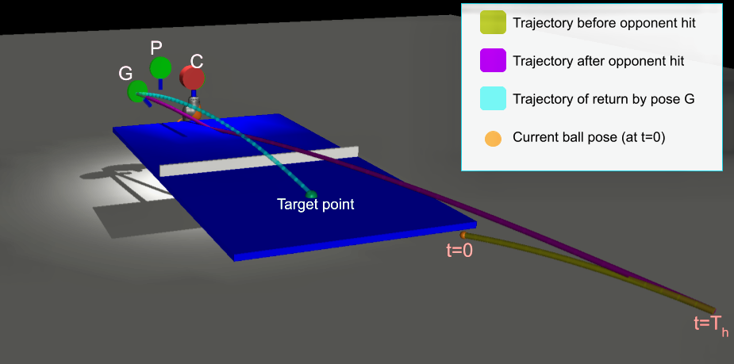
Figure 7 : Simulated target poses and ball trajectory.
图 7：模拟目标位姿和球轨迹。
The simulation environment models the dynamics of the robot and the ball, incorporating realistic physical properties.
仿真环境对机器人和球的动力学进行建模，并结合了真实的物理特性。
More details on the exact algorithm used in designing the controller are presented in the appendix.
附录中提供了有关设计控制器时使用的确切算法的更多详细信息。
We evaluated the robot’s performance under three different scenarios:
我们评估了机器人在三种不同场景下的性能：
- 1.
Baseline (no pre-positioning) : The robot remains stationary at it’s central position (pose C in Fig. 7 ) until the opponent strikes the ball, at which point it moves to the position where the ground truth ball trajectory intersects its hitting plane (pose G in Fig. 7 ).
基线（无预定位）：机器人在中心位置保持静止（图 7 中的姿态 C），直到对手击球，此时机器人移动到真值球轨迹与其击球平面相交的位置（图 7 中的姿态 G）。
- 2.
Anticipatory pre-positioning : The robot uses our anticipatory control algorithm to pre-position its end-effector at the predicted target point (pose P in Fig. 7 ) before the opponent hits the ball.
预判预定位：在对手击球之前，机器人使用我们的预判控制算法将其末端执行器预定位在预测目标点（图7中的姿态P）。
We fix some and generate exactly seconds before the opponent hits the ball in each exchange.
固定 ，在每次往返击球中，于对手击球前恰好 秒生成 。
The target pose is set to G after the opponent hits the ball.
对手击球后目标位姿设置为G。
- 3.
Oracle pre-positioning : The robot is provided with the ground truth future ball trajectory and pre-positions accordingly (pose G in Fig. 7 ) exactly seconds before the opponent hits the ball.
预言机预定位：机器人获得未来球轨迹的真值，并在对手击球前秒进行相应的预定位（图7中的姿态G）。
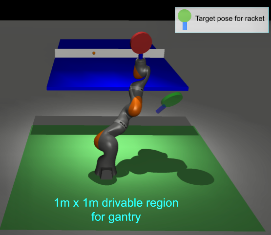
Figure 8 : Simulator snapshot.
图 8：模拟器快照。
5.4.2 Results5.4.2 结果
Table 3 presents the ball return rates for each scenario over a held out test set of exchanges.
表 3 报告了在独立留出的往返击球测试集上，各种策略的回球率。
These results demonstrate the utility of an anticipatory control algorithm in improving the ball return rate for a robot table tennis player.
这些结果证明了预判控制算法在提高机器人乒乓球运动员的回球率方面的实用性。
While the oracle pre-positioning achieves the highest return rate, our predictive approach closes a substantial portion of the gap without requiring perfect foresight.
虽然已知未来真值的 Oracle 预定位策略取得最高回球率，但本文预测方法无需完美预知未来，就能显著缩小与它的差距。
We set and for this experiment.
本实验设置和。
Some more additional results and ablation studies are in Appendix D.
附录 D 中提供了更多额外结果和消融研究。
| Pre-Pos. Strategy 预定位策略 | Return Rate 回球率 | Return Accuracy 回球落点误差 | Pose Accuracy 球拍位姿误差 |
|---|---|---|---|
| Baseline基线 | 49.9% | 0.497 m | 0.25 m / 13.3∘ |
| Anticipatory预判策略 | 59.0% | 0.463 m | 0.19 m / 9.86∘ |
| Oracle已知未来真值（Oracle） | 64.5% | 0.453 m | 0.15 m / 6.26∘ |
Table 3 : Return rates for the robot under different pre-positioning strategies.
表3：机器人在不同预定位策略下的回球率。
Return accuracy is the mean deviation of the return bounce point from the target point on the opponent’s side of the table.
回球准确度是指回球弹跳点与对方球台目标点的平均偏差。
Pose accuracy is the mean difference in pose (position error/orientation error) of the racket achieved vs target pose at the time when the ball hits or passes the racket.
姿态精度是球击中或通过球拍时球拍达到的姿态（位置误差/方向误差）与目标位姿的平均差异。
6 Conclusion6 结论
We present a scalable method for reconstructing 3D table tennis gameplay from monocular videos, and we leverage publicly available footage to create a large-scale dataset comprising over 73,000 exchanges.
我们提出了一种可扩展的方法，用于从单目视频重建 3D 乒乓球比赛，并利用公开可用的镜头创建一个包含超过 73,000 个往返击球的大规模数据集。
This dataset enabled us to train a transformer-based model to anticipate opponent actions, predicting future ball trajectories before opponents make contact with the ball.
该数据集使我们能够训练基于Transformer的模型来预测对手的动作，在对手接触球之前预测未来的球轨迹。
We integrate these predictions into a controller for a KUKA robot arm and demonstrate improved human-robot gameplay in simulation, increasing the ball return rate from from 49.9% to 59.0% as compared to a baseline policy.
我们将这些预测集成到 KUKA 机器人手臂的控制器中，并在模拟中展示改进的人机比赛过程，与基准策略相比，将球回球率从 49.9% 提高到 59.0%。
Our work underscores the importance of behavior-aware algorithms in designing human-robot control algorithms.
我们的工作强调了行为感知算法在设计人机控制算法中的重要性。
Future work includes reducing reconstruction error, extending the reconstruction algorithm to operate on a larger variety of camera views, addressing dataset biases, and validating the approach on physical hardware.
未来的工作包括减少重建误差、扩展重建算法以在更多种类的相机视图上运行、解决数据集偏差以及在物理硬件上验证该方法。
7 Acknowledgements7 致谢
This research was supported in part by DOD Advanced Research Projects Agency project Design of Robustly Implementable Autonomous and Intelligent Machines under Award HR00112490425.
本研究部分受美国国防部高级研究计划局“Design of Robustly Implementable Autonomous and Intelligent Machines”项目资助，资助编号为 HR00112490425。
This research was also supported in part by DAF Air Force Research Laboratory project Provably Correct Design of Adaptive Hybrid Neuro-Symbolic Cyber Physical Systems under Award FA8750-23-C-0080.
本研究还部分受美国空军研究实验室“Provably Correct Design of Adaptive Hybrid Neuro-Symbolic Cyber Physical Systems”项目资助，资助编号为 FA8750-23-C-0080。
References
- [1] Saminda Abeyruwan, Laura Graesser, David B. D’Ambrosio, Avi Singh, Anish Shankar, Alex Bewley, Deepali Jain, Krzysztof Choromanski, and Pannag R. Sanketi. i-sim2real: Reinforcement learning of robotic policies in tight human-robot interaction loops, 2022.
- [2] Anastasios Angelopoulos, Stephen Bates, Jitendra Malik, and Michael I Jordan. Uncertainty sets for image classifiers using conformal prediction. arXiv preprint arXiv:2009.14193, 2020.
- [3] T. Bebie and Hanspeter Bieri. A video‐based 3d‐reconstruction of soccer games. Computer Graphics Forum, 19:391 – 400, 2000.
- [4] John Billingsley. Robot ping pong. Practical Computing, 6(5), 1983.
- [5] G. Bradski. The OpenCV Library. Dr. Dobb’s Journal of Software Tools, 2000.
- [6] Dieter Büchler, Simon Guist, Roberto Calandra, Vincent Berenz, Bernhard Schölkopf, and Jan Peters. Learning to play table tennis from scratch using muscular robots. IEEE Transactions on Robotics, 38(6):3850–3860, 2022.
- [7] Vanyi Chao, Ankhzaya Jamsrandorj, Yin May Oo, Kyung-Ryoul Mun, and Jinwook Kim. 3d ball trajectory reconstruction of a ballistic shot from a monocular basketball video. In IECON 2023- 49th Annual Conference of the IEEE Industrial Electronics Society, pages 1–6, 2023.
- [8] Yu-Jou Chen and Yu-Shuen Wang. Tracknetv3: Enhancing shuttlecock tracking with augmentations and trajectory rectification. In Proceedings of the 5th ACM International Conference on Multimedia in Asia, New York, NY, USA, 2024. Association for Computing Machinery.
- [9] Nasu Daiki. Timing adjustment of baseball batters determined from motion analysis of batting. NTT Technical Review, 16(3):12–16, 2018.
- [10] David B. D’Ambrosio, Saminda Abeyruwan, Laura Graesser, Atil Iscen, Heni Ben Amor, Alex Bewley, Barney J. Reed, Krista Reymann, Leila Takayama, Yuval Tassa, Krzysztof Choromanski, Erwin Coumans, Deepali Jain, Navdeep Jaitly, Natasha Jaques, Satoshi Kataoka, Yuheng Kuang, Nevena Lazic, Reza Mahjourian, Sherry Moore, Kenneth Oslund, Anish Shankar, Vikas Sindhwani, Vincent Vanhoucke, Grace Vesom, Peng Xu, and Pannag R. Sanketi. Achieving human level competitive robot table tennis, 2024.
- [11] Tianli Ding, Laura Graesser, Saminda Abeyruwan, David B. D’Ambrosio, Anish Shankar, Pierre Sermanet, Pannag R. Sanketi, and Corey Lynch. Goalseye: Learning high speed precision table tennis on a physical robot, 2022.
- [12] James M Dolezal, Andrew Srisuwananukorn, Dmitry Karpeyev, Siddhi Ramesh, Sara Kochanny, Brittany Cody, Aaron S Mansfield, Sagar Rakshit, Radhika Bansal, Melanie C Bois, et al. Uncertainty-informed deep learning models enable high-confidence predictions for digital histopathology. Nature communications, 13(1):6572, 2022.
- [13] Dirk Farin, Susanne Krabbe, Peter H. N. de With, and Wolfgang Effelsberg. Robust camera calibration for sport videos using court models. In Storage and Retrieval Methods and Applications for Multimedia 2004, pages 80 – 91. International Society for Optics and Photonics, SPIE, 2003.
- [14] International Table Tennis Federation. ITTF Statutes, 2024. Section 2.1, Accessed: 2024-02-01.
- [15] Wenbo Gao, Laura Graesser, Krzysztof Choromanski, Xingyou Song, Nevena Lazic, Pannag R. Sanketi, Vikas Sindhwani, and Navdeep Jaitly. Robotic table tennis with model-free reinforcement learning. 2020 IEEE/RSJ International Conference on Intelligent Robots and Systems (IROS), pages 5556–5563, 2020.
- [16] Shubham Goel, Georgios Pavlakos, Jathushan Rajasegaran, Angjoo Kanazawa, and Jitendra Malik. Humans in 4d: Reconstructing and tracking humans with transformers, 2023.
- [17] Kris K. Hauser. Recognition, prediction, and planning for assisted teleoperation of freeform tasks. Autonomous Robots, 35:241 – 254, 2012.
- [18] Yanlong Huang, Bernhard Schölkopf, and Jan Peters. Learning optimal striking points for a ping-pong playing robot. In 2015 IEEE/RSJ International Conference on Intelligent Robots and Systems (IROS), pages 4587–4592, 2015.
- [19] Alexander Kirillov, Eric Mintun, Nikhila Ravi, Hanzi Mao, Chloe Rolland, Laura Gustafson, Tete Xiao, Spencer Whitehead, Alexander C. Berg, Wan-Yen Lo, Piotr Dollár, and Ross Girshick. Segment anything, 2023.
- [20] Markus Kuderer, Henrik Kretzschmar, Christoph Sprunk, and Wolfram Burgard. Feature-based prediction of trajectories for socially compliant navigation. In Robotics: Science and Systems, 2012.
- [21] Matthew Loper, Naureen Mahmood, Javier Romero, Gerard Pons-Moll, and Michael Black. Smpl: a skinned multi-person linear model. 2015.
- [22] C. Malerczyk and H. Seibert. 3d-reconstruction of soccer scenes. 2007 3DTV Conference, pages 1–4, 2007.
- [23] Alec Radford and Karthik Narasimhan. Improving language understanding by generative pre-training. 2018.
- [24] Ilija Radosavovic, Bike Zhang, Baifeng Shi, Jathushan Rajasegaran, Sarthak Kamat, Trevor Darrell, Koushil Sreenath, and Jitendra Malik. Humanoid locomotion as next token prediction, 2024.
- [25] Rahul Rahaman et al. Uncertainty quantification and deep ensembles. Advances in Neural Information Processing Systems, 34:20063–20075, 2021.
- [26] Joseph Redmon, Santosh Divvala, Ross Girshick, and Ali Farhadi. You only look once: Unified, real-time object detection. In 2016 IEEE Conference on Computer Vision and Pattern Recognition (CVPR), pages 779–788, 2016.
- [27] Olaf Ronneberger, Philipp Fischer, and Thomas Brox. U-net: Convolutional networks for biomedical image segmentation, 2015.
- [28] Koya Sato, Yuji Sano, Mai Otsuki, Mizuki Oka, and Kazuhiko Kato. Augmented recreational volleyball court: Supporting the beginners’ landing position prediction skill by providing peripheral visual feedback. Proceedings of the 10th Augmented Human International Conference 2019, 2019.
- [29] Lejun Shen, Qing Liu, Lin Li, and Yawei Ren. Reconstruction of 3d ball/shuttle position by two image points from a single view. pages 89–96, 2018.
- [30] Sho Tamaki and Hideo Saito. Reconstruction of 3d trajectories for performance analysis in table tennis. In 2013 IEEE Conference on Computer Vision and Pattern Recognition Workshops, pages 1019–1026, 2013.
- [31] Jonas Tebbe, Lukas Krauch, Yapeng Gao, and Andreas Zell. Sample-efficient reinforcement learning in robotic table tennis. CoRR, abs/2011.03275, 2020.
- [32] Stephen T. Thornton and Jerry B. Marion. Classical Dynamics of Particles and Systems. Brooks/Cole, 2007.
- [33] Emanuel Todorov, Tom Erez, and Yuval Tassa. Mujoco: A physics engine for model-based control. In 2012 IEEE/RSJ International Conference on Intelligent Robots and Systems, pages 5026–5033, 2012.
- [34] Hazem Torfah, Aniruddha Joshi, Shetal Shah, S Akshay, Supratik Chakraborty, and Sanjit A Seshia. Learning monitor ensembles for operational design domains. In International Conference on Runtime Verification, pages 271–290. Springer, 2023.
- [35] Ashish Vaswani, Noam Shazeer, Niki Parmar, Jakob Uszkoreit, Llion Jones, Aidan N. Gomez, Lukasz Kaiser, and Illia Polosukhin. Attention is all you need. CoRR, abs/1706.03762, 2017.
- [36] Roman Voeikov, Nikolay Falaleev, and Ruslan Baikulov. Ttnet: Real-time temporal and spatial video analysis of table tennis. In 2020 IEEE/CVF Conference on Computer Vision and Pattern Recognition Workshops (CVPRW), pages 3866–3874, 2020.
- [37] Vladimir Vovk, Alex Gammerman, and Glenn Shafer. Algorithmic Learning in a Random World. Springer-Verlag, Berlin, Heidelberg, 2005.
- [38] Jie Wang. Shot characteristics based on match period in elite table tennis matches. Frontiers in Psychology, 12, 2021.
- [39] Zhikun Wang, Marc Peter Deisenroth, Heni Ben Amor, David Vogt, Bernhard Schölkopf, and Jan Peters. Probabilistic Modeling of Human Movements for Intention Inference, pages 433–440. 2013a.
- [40] Z. Wang, K. Muelling, M. P. Deisenroth, H. Ben Amor, D. Vogt, B. Schoelkopf, and J. Peters. Probabilistic movement modeling for intention inference in human-robot interaction. International Journal of Robotics Research, 32(7):841 – 858, 2013b.
- [41] Zhikun Wang, Abdeslam Boularias, Katharina Mülling, Bernhard Schölkopf, and Jan Peters. Anticipatory action selection for human–robot table tennis. Artificial Intelligence, 247:399–414, 2017. Special Issue on AI and Robotics.
- [42] Erwin Wu and Hideki Koike. Futurepose - mixed reality martial arts training using real-time 3d human pose forecasting with a rgb camera. In 2019 IEEE Winter Conference on Applications of Computer Vision (WACV), pages 1384–1392, 2019.
- [43] Erwin Wu and Hideki Koike. Futurepong: Real-time table tennis trajectory forecasting using pose prediction network. In Extended Abstracts of the 2020 CHI Conference on Human Factors in Computing Systems, page 1–8, New York, NY, USA, 2020. Association for Computing Machinery.
- [44] Xinguo Yu, Xin Yan, Tze Sen Hay, and H. Leong. 3d reconstruction and enrichment of broadcast soccer video. pages 260–263, 2004.
- [45] Haotian Zhang, Ye Yuan, Viktor Makoviychuk, Yunrong Guo, Sanja Fidler, Xue Bin Peng, and Kayvon Fatahalian. Learning physically simulated tennis skills from broadcast videos. ACM Trans. Graph.
- [46] Wendi Zhang, Yin Zhang, Yuli Zhao, and Bin Zhang. Recognizing and recovering ball motion based on low-frame-rate monocular camera. Applied Sciences, 2023.
Supplementary Material
补充材料
Appendix A Design of the controller to track any target pose of the end-effector附录A 跟踪末端执行器任意目标位姿的控制器设计
We use reinforcement learning to train a policy that can achieve a target pose within a given distribution in minimum time.
我们使用强化学习来训练可以在给定分布内以最短的时间实现目标位姿的策略。
The robot consists of manipulator with 7 joints and movement of the base in XY plane resulting into a 9DoF systems as it has 9 control variables to move the system.
该机器人由具有 7 个关节的机械手组成，底座在 XY 平面上移动，形成 9DoF 系统，因为它有 9 个控制变量来移动系统。
The racket is attached at the end-effector as shown in Figure 8 .
球拍连接在末端执行器上，如图8所示。
Reason for choice of a distribution for the target during training is to encourage taking solutions of joint angles and gantry position such that it can easily move to any pose within the distribution and also change within the same distribution very quickly.
在训练期间选择目标分布的原因是鼓励采用关节角度和龙门位置的解决方案，以便它可以轻松地移动到分布内的任何姿态，并且还可以在同一分布内快速变化。
The exact joint angle range of the Kuka iiwa R820 are given in Table 4 .
Kuka iiwa R820 的精确关节角度范围如表 4 所示。
We now describe the RL algorithm in detail
现在我们详细描述RL算法
| Joint关节 | Min angle (in ∘)最小角度（以 ∘ 为单位） | Max angle (in ∘)最大角度（以 ∘ 为单位） |
| A1 | -170 | 170 |
| A2 | -120 | 120 |
| A3 | -170 | 170 |
| A4 | -120 | 120 |
| A5 | -170 | 170 |
| A6 | -120 | 120 |
| A7 | -175 | 175 |
Table 4 : Kuka IIWA R820 joint angle ranges
表 4：Kuka IIWA R820 关节角度范围
A.1 Reward designA.1 奖励设计
We reward the RL agent for moving towards the target pose.
我们奖励 RL 智能体朝着目标位姿移动。
Given a target goal .
给定目标。
The distance cost from the goal, is defined as follows:-
距目标的距离成本定义如下：-
| (17) |
where is the weight factor for the orientation error in radians and is a hyperparameter set to for the experiments in this paper, is the goal position and is the goal orientation in quaternion, and are the racket position and quaternion that is attached at the end-effector.
其中是方向误差的权重因子（以弧度为单位），是本文实验中设置为的超参数，是目标位置，是四元数的目标方向，和是附着在末端执行器的球拍位置和四元数。
The reward, at each time step is given as follows:-
每个时间步的奖励如下：-
| (18) |
where is the action command at time step defined as the change in joint angle and gantry position wrt the current configuration.
其中是时间步的动作命令，定义为相对于当前配置的关节角度和龙门位置的变化。
At every time step , the target pose is changed if the robot is able to match the pose of the racket on it’s end-effector with some tolerance .
在每个时间步 ，若末端球拍已在容差 内达到目标位姿，就更新目标位姿 。
The tolerance is changed in a curriculum from to .
通过课程学习，将容差 从 逐步调整至 。
Mathematically, change in target pose is defined as follows:-
从数学上来说，目标位姿的变化定义如下：-
| (19) |
A.2 Training target pose distributionA.2 训练目标位姿分布
The target pose distribution is defined as follows:-
目标位姿分布定义如下：-
| (20) |
where is the orientation of racket face that extends to the target point in Figure 7 with handle facing in -Z direction; are chosen accordingly.
式中为拍柄朝向-Z方向，球拍面延伸至图7中目标点的方位； 相应选择。
This enables learning to achieve poses only within the distribution of where players usually hold their racket to return the ball facing the table.
这使得学习能够仅在球员通常拿着球拍面向球台回球的分布范围内实现姿态。
randomly chosen poses in this distribution are given in Figure 9
该分布中随机选择的姿态如图9所示
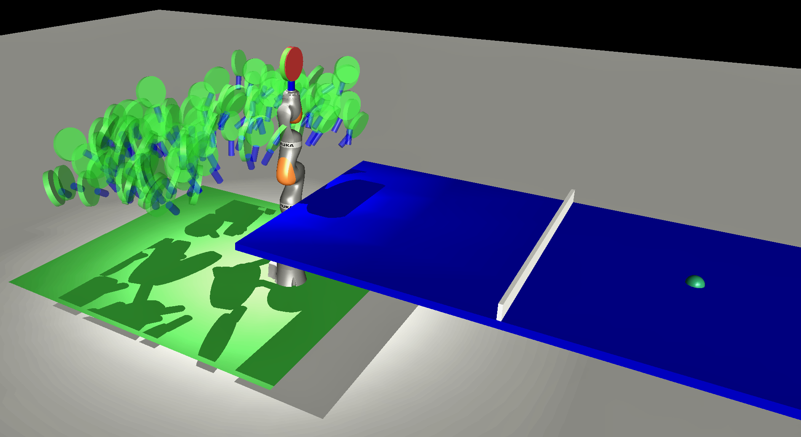
Figure 9 : 100 poses sampled from
图9：从中采样的100个姿态
A.3 Policy training策略训练
We use Proximal Policy Optimization (PPO) RL algorithm to learn the optimal policy to maximize the reward in the environment described above.
我们使用近端策略优化（PPO）RL 算法来学习最优策略，以在上述环境中最大化奖励。
The episode sixe is chosen to be time steps with a time step .
每个训练回合长度为 个时间步，步长为 。
The training curve for rewards and the evaluation performance is given in Figure 10 .
奖励和评估表现的训练曲线如图10所示。
For evaluation performance, we fix and choose the policy with best performance within environment steps
对于评估性能，我们固定并选择环境步骤内性能最佳的策略
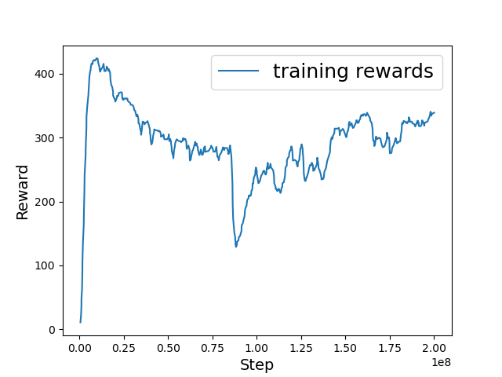
(a) Train
（a）训练
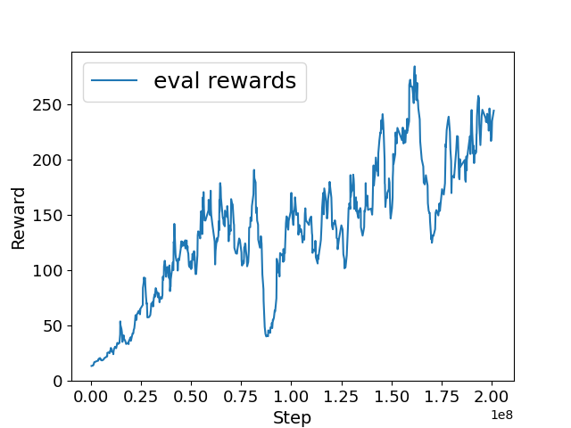
(b) Eval
(b) 评估
Figure 10 : Rewards
图10：奖励
Appendix B Contact modeling附录 B 接触建模
It is important to specify how the ball will bounce when collided with the table and the racket so as to recreate the ball exchanges collected from videos as described in Section 3
重要的是要指定球在与球台和球拍碰撞时如何弹跳，以便重新创建从视频中收集的球往返击球，如第 3 节中所述
B.1 Racket to ball contactB.1 球拍与球的接触
For the racket to ball contact we assume lossless bounce i.e. given the racket normal and the ball velocity before collision .
对于球拍与球的接触，我们假设无损弹跳，即给定球拍法线和碰撞前的球速度。
The velocity after collision, .
碰撞后的速度，。
This conserves the speed ( ) and as the racket is assumed to be static, it does not impart any extra speed to the ball.
这保留了速度（），并且由于假设球拍是静态的，因此它不会给球带来任何额外的速度。
B.2 Ball to table contact球台接触
For the ball to table contact, we aim to exactly recreate the trajectory parabola obtained in Section 3 .
对于球与球台的接触，我们的目标是准确地重新创建第 3 节中获得的轨迹抛物线。
For this, we fit the ball velocities for each segment divided by when ball contacts the table or the opponent’s racket.
按球与台面或对方球拍接触的时刻划分片段，再分别拟合各段球速。
Whenever ball makes a collision with the table or the opponent’s racket, the new velocity is set to the values fit for the new segment as fit in Section 3 .
每当球与球台或对手的球拍发生碰撞时，新速度将设置为适合第 3 节中新段的值。
This very closely enables recreating the trajectories in Section 3
这非常接近地能够重新创建第 3 节中的轨迹
Appendix C Setting target pose G附录C 设置目标位姿G
The target pose G is calculated as the pose to reflect the ball based on Section B.1 such that it hits the table as close as possible to the target point .
目标位姿G是根据B.1节计算反射球的姿态，使得球尽可能接近目标点击球台。
Mathematically, given the table height , velocity of the ball at the hitting point , the hitting point on the racket , and the function that extracts the racket hitting plane normal from pose, this can be formulated as:-
从数学上讲，给定球台高度、球在击球点的速度、球拍上的击球点以及从姿态中提取球拍击球平面法线的函数，可以将其表示为：
| (21) |
where is the acceleration due to gravity constant
为重力加速度常数。
Appendix D Additional results附录 D 附加结果
D.1 Varying central pose D.1 变化的中心姿态
The results presented in Table 3 are with the central position, at the center.
表3中的结果以中心位置为中心。
However, we also set pose not to be in the center of the table but biased towards one side.
不过，我们也将姿态设置为不在球台中央，而是偏向一侧。
We set as the mean of all the positions in the training dataset from where the player hits the ball.
我们将设置为训练数据集中球员击球位置的平均值。
This is to show that the transformer does not just learn the mean of all returns made by the opponent but rather a correlation with the current pose, history of poses of the opponent.
这说明 Transformer 学到的并非对手所有回球的平均值，而是对手当前及历史人体姿态与回球之间的关联。
The updated results are given in Table 5 .
更新后的结果如表5所示。
The return rates improve with the updated starting pose for all the 3 cases, however the trend remains the same, i.e. the return rates with using the ground truth is the highest, followed by using our prediction for pre-positioning and the return rate if not pre-positioning is the lowest.
对于所有 3 种情况，随着更新的起始姿态，回球率有所提高，但趋势保持不变，即使用真值的回球率最高，其次是使用我们预测的预定位的回球率，如果不预定位的回球率最低。
This shows that the trained transformer indeed learns a correlation of the human poses with the anticipated return trajectory of the ball.
这表明经过训练的Transformer确实学习了人体姿态与球的预判返回轨迹的相关性。
| Pre-Pos. Strategy 预定位策略 | Return Rate 回球率 | Return Accuracy 回球落点误差 | Pose Accuracy 球拍位姿误差 |
|---|---|---|---|
| Baseline基线 | 52.9% | 0.506 m | 0.23 m / 12.68∘ |
| Anticipatory预判策略 | 62.5% | 0.469 m | 0.17 m / 9.43∘ |
| Oracle已知未来真值（Oracle） | 66.2% | 0.489 m | 0.14 m / 5.93∘ |
Table 5 : Return rates for the robot under different pre-positioning strategies with as the mean position of all the hit points in the training dataset and orientation facing the table.
表 5：以作为训练数据集中所有击中点的平均位置和面向球台的方向，在不同预定位策略下机器人的回球率。
Return accuracy is the mean deviation of the return bounce point from the target point on the opponent’s side of the table.
回球准确度是指回球弹跳点与对方球台目标点的平均偏差。
Pose accuracy is the mean difference in pose (position error/orientation error) of the racket achieved vs target pose at the time when the ball hits or passes the racket.
姿态精度是球击中或通过球拍时球拍达到的姿态（位置误差/方向误差）与目标位姿的平均差异。
D.2 Varying D.2 变化
Next, we study the effect on results by changing the hyperparameter which dictates how much to trust the prediction made by the anticipatory algorithm.
接下来，我们通过更改超参数来研究对结果的影响，该参数决定了对预判算法做出的预测的信任程度。
means trusting the prediction completely, while means the anticipatory algorithm is completely trusted in setting the target pose.
原文将 和 均描述为“完全信任预判”；此处表述存在矛盾，见译者注。
Table 6 shows results with different values of .
表6显示了不同值的结果。
As can be seen, we get the best return rate at
可以看出，我们在处得到了最好的回球率
| Pre-Pos. Strategy 预定位策略 | |||
|---|---|---|---|
| Baseline基线 | 49.9% | 49.9% | 49.9% |
| Anticipatory预判策略 | 55.6% | 59.0 % | 54.4% |
| Oracle已知未来真值（Oracle） | 64.5% | 64.5% | 64.5% |
Table 6 : Return rates for the robot under different values of and using our anticipatory pre-positioning strategy
表6：机器人在不同值和使用我们的预判预定位策略下的回球率
D.3 Varying D.3 变化
Next, we study the effect on results by changing the hyperparameter , the length of history that dictates the time to anticipate before the opponent hits the ball.
接下来，我们通过更改超参数来研究对结果的影响，超参数是决定对手击球之前预测时间的历史长度。
There is a trade-off between accuracy and the available time for the anticipatory algorithm to pre-position.
在准确性和预判算法预定位的可用时间之间存在权衡。
With larger , the anticipatory algorithm will have more response time, but the anticipation will be more inaccurate, as it will be hard to tell how the opponent will hit more ahead of time.
越大，预测算法的响应时间越长，但预测会更不准确，因为很难提前知道对手会如何击球。
Vice-versa for shorter .
反之亦然，较短。
Hence, the value of is chosen accordingly.
因此，相应地选择的值。
Table 7 shows results with different values of .
表7显示了不同值的结果。
As can be seen, we get the best return rate at .
可以看出，我们在处得到了最好的回球率。
| Pre-Pos. Strategy 预定位策略 | |||
|---|---|---|---|
| Baseline基线 | 49.9% | 49.9% | 49.9% |
| Anticipatory预判策略 | 57.3% | 59.0 % | 58.4% |
| Oracle已知未来真值（Oracle） | 62.1% | 64.5% | 65.2% |
Table 7 : Return rates for the robot under different values of and using our anticipatory pre-positioning strategy
表7：机器人在不同值和使用我们的预判预定位策略下的回球率